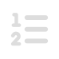
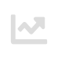

Jumlah Pemberitaan30 hari terakhir
Terdapat 6.023 pemberitaan dari seluruh topik pemantauan, dengan rincian:
- 4.035 sentimen positif
- 1.627 sentimen netral
- 316 sentimen negatif.
Menyajikan tren sentimen dan pemberitaan perusahaan, serta perkembangan kebijakan dan regulasi di sektor keuangan.
Jumlah Pemberitaan30 hari terakhir
Terdapat 6.023 pemberitaan dari seluruh topik pemantauan, dengan rincian:
Topik Pemberitaan30 hari terakhir
Topik yang dipantau meliputi:
Puncak Pemberitaan30 hari terakhir
Pemberitaan terbanyak terjadi pada 15 Juli 2026 yang mencapai 251 pemberitaan.
Topik Terbanyak30 hari terakhir

Ekonomi Digital dan Ekonomi Berkelanjutan menjadi topik yang paling sering disebut dalam seluruh pemberitaan.
Sentimen MingguanPeriode 13 Jul 2026 - 19 Jul 2026

Persentase kenaikan dan penurunan didasarkan pada perbandingan minggu lalu dengan minggu sebelumnya.
Grafik, data sentimen, serta artikel yang ditampilkan disediakan oleh Unimind Intelligence.